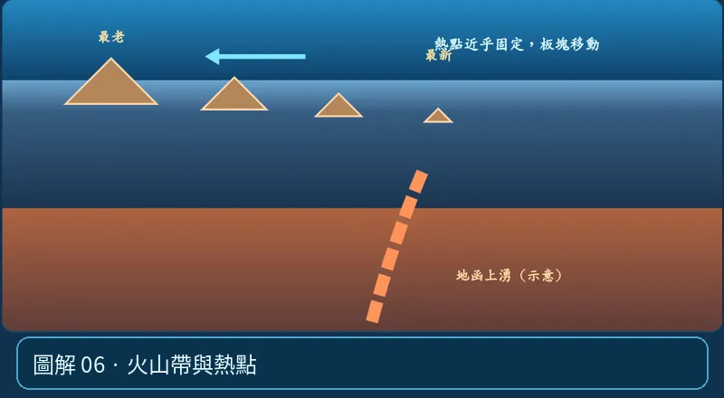

第 05 單元｜圖解 6/8｜課本 p.80–88
火山帶與熱點
全球火山常沿環太平洋火環、島弧、中洋脊分布；熱點也可在板塊內形成火山鏈（如夏威夷），火山鏈的年齡變化可推估板塊運動方向。
① 看一眼② 操作圖③ 自己推理④ 揭開解答
🔬 這張圖，請自己動手試
操作圖上方的頁籤、滑桿或按鈕；圖片也能左右滑動放大觀看。
互動圖解 · 火山帶與熱點

原創 SVG 地科教學模型，方便理解，非真實比例、非即時地震資料；互動無法載入時仍有靜態圖。
STEP 01 · 先觀察
👀 眼睛先找線索
切到「熱點」，沿火山鏈找最年輕與最老火山的位置。
💡 為什麼是這樣？
熱點與板塊相對運動可以留下由新到老的火山鏈；這一類火山活動不必發生在板塊邊界。
🎯 換個問法想一題
「所有火山都在板塊交界」能解釋夏威夷嗎？
我想好了，點開看答案 ↓
不能；夏威夷是典型板塊內熱點火山鏈。
⚡ 一句記住：不是每個火山都在邊界